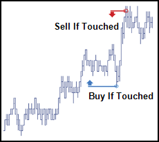
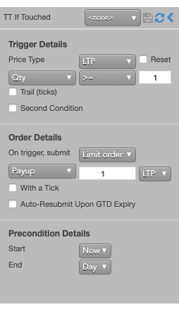
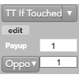

An If-Touched is an order that is triggered when the market has reached or traded through a specified price in the market. If-Touched orders are similar to Stop orders except the trigger price behavior is inverted. An If-Touched trigger price is typically set better than the current market.
Buy If-Touched orders are generally placed below the current last traded price while, Sell If-Touched orders are generally placed above the current last traded price.

The following is an example of a Trailing If-Touched order that triggers when a trade occurs and there is available quantity at the selected last traded price. Once triggered, the TT If-Touched order submits a child order placed three ticks into the market relative the the LTP.

{% comment %}You can configure the following TT If-Touched behaviors:

Note: If you click a custom action button (or use a hotkey) for this TT Order Type that also specifies an order template, these two fields will not be displayed, as the template already defines their desired values. Right-clicking on the button displays these parameters. You can also click the edit button to make changes, if desired.